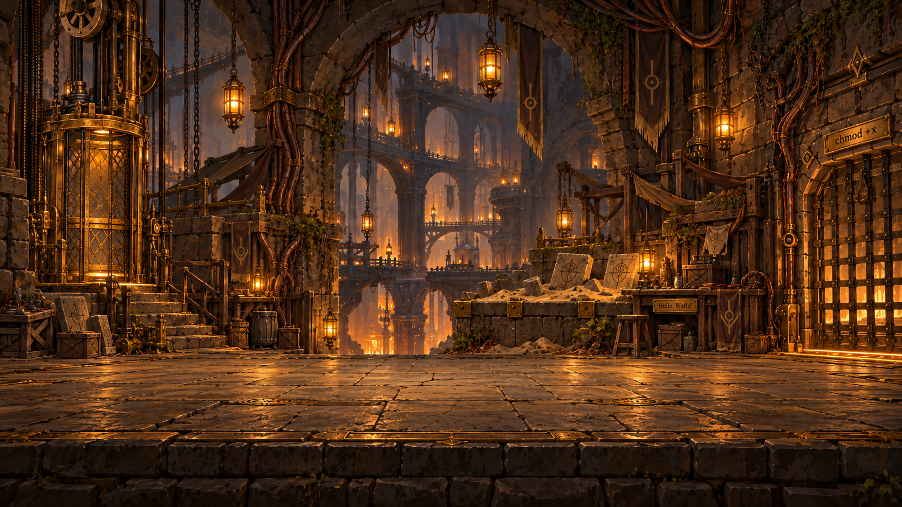
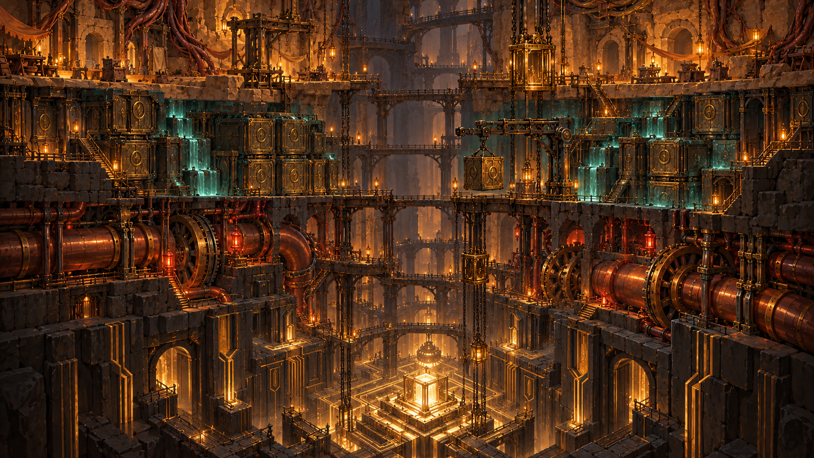

RING 3
Four layers of one buried Machine. Warm stone and brass above; memory, machinery, and root privilege below.

A continuous cutaway makes the destination clear. Inspect any room; choose a lit next room to move down. This is an illustrative route, not a generated game map.

Keep the whole shaft as the overview. During a run, focus or scroll through the active ring and retain a compact four-ring depth rail. Rooms sit on test-cell trays, memory blocks, bus bridges, then precise kernel channels.
Each guardian guards the lower exit of its ring. Crossing that boundary lowers the ring number: chmod +x → free() → ACK → sudo. The kernel is always the lowest destination.
The lift or player marker moves down when a room is chosen. Lamps vary locally; the route stays steady. Decorative motion stops with reduced motion.
The main program Shardrun already has four full layers. Their existing routes, encounters and saved IDs are retained, with Rings 3 through 0 providing the new presentation. The implementation uses a long scrolling Machine shaft; the compact overview below remains the original concept.
Generated with the built-in imagegen tool, using the current title painting as the style reference. Full prompts and image metadata are preserved alongside this gallery.
Design brief · Exact prompt set · Image provenance · Title reference · Character-room reference